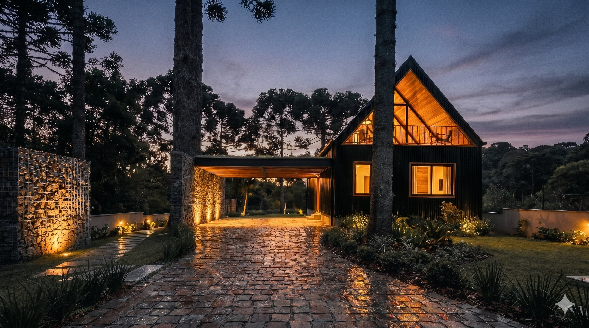
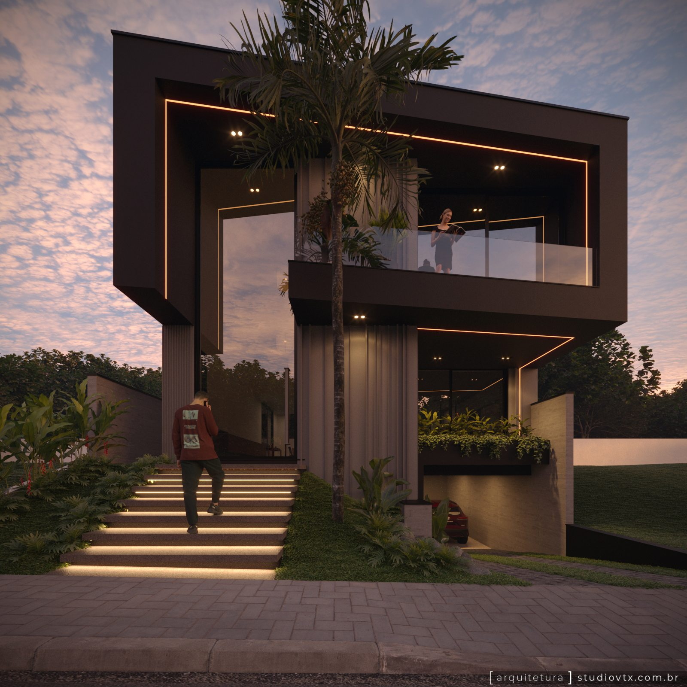
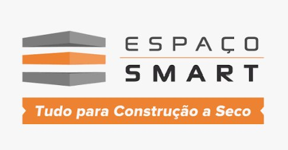
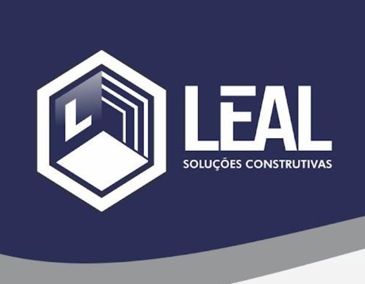
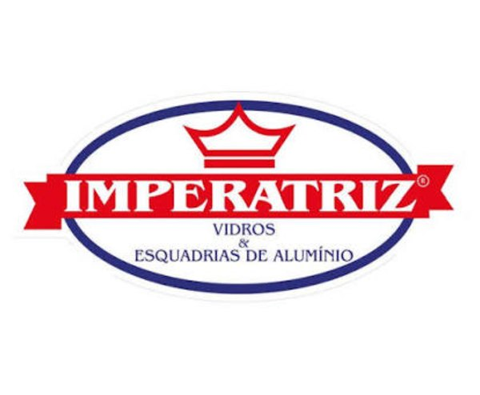
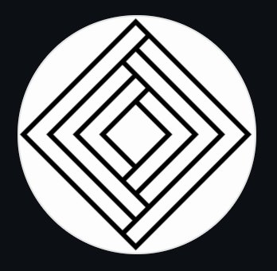

prefere falar agora? chamar no WhatsApp
casalsf01
1 / 4
imagens em breve
light steel frame
casalsf01
casas de alto padrão em aço.
Light Steel Frame é a tecnologia que permite construir mais rápido, com mais precisão e sem abrir mão de nenhum detalhe do projeto que você imaginou.
ver projetos conversar com especialista
No Light Steel Frame, a estrutura da casa é feita de perfis de aço galvanizado de alta resistência, montados a partir de um projeto resolvido nos mínimos detalhes antes de a obra começar. Nada é improvisado no canteiro.
O resultado é uma casa com melhor desempenho térmico e acústico, menor desperdício de material e tempo de obra significativamente reduzido — sem nenhuma concessão em arquitetura ou acabamento.
No studio VTX, o Light Steel Frame começa no projeto arquitetônico e vai até o acompanhamento de obra. Cada fase é controlada, documentada e entregue com a mesma exigência estética.

"A casa de alto padrão não é definida pelo material. É definida pela precisão do projeto e pela intenção de quem projeta."
O preconceito existe. A realidade é outra. Light Steel Frame permite arquitetura mais ousada, prazos mais curtos e controle total de qualidade — exatamente o que um cliente exigente espera.
Somos especializados em residências LSF de alto padrão e projetamos para todo o país. Não fazemos tudo — fazemos bem o que escolhemos fazer.
Diferente de escritórios que só projetam, acompanhamos a execução. O projeto não termina no papel — termina na entrega das chaves.




O Studio VTX assume poucos projetos por vez. Deixe seus dados e retornamos para conversar sobre a sua casa.
prefere falar agora? chamar no WhatsApp